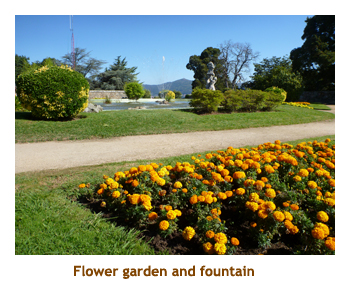
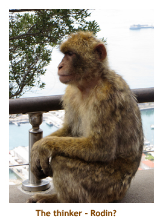
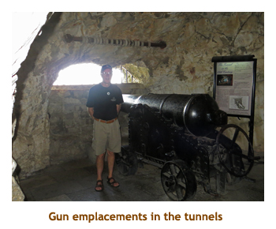

[ Home ] [ Travel ] [ Photography ] [ Pets ] [ Games] [ Rowing] [ Physics ]


Cruising on the Independence of the Seas
Travel
Cruises
Past Cruises (Diaries)
Future Cruises
Rogues Galleries
Land Trips
Diaries (Land Trips)
Hawai'i - Big Island - 04'01
Hawai'i - Maui - 05'02
Hawai'i - Big Island - 04'03
Hawai'i - Kaua'i - 09'04
Hawai'i - Big Island - 04'06
Hawai'i - Maui - 04'06
Mainland China - 05'07
Phoenix, Arizona - 12'07
Greek Isles - 05'08
Hawai'i - Kaua'i - 09'08
Hawai'i - Big Island - 09'09
Hawai'i - Maui - 05'12
Hawai'i - Big Island - 04'13
Ireland - 08'13
Mexico - Cancun 11'13
France/Belgium/Lux 07'15
Hawai'i - Big Island - 05'17
England / Wales - 06'17
Hawai'i - Big Island - 09'19
Photography
Cameras
Underwater
Pets
Tara
Blackie
Whitey
Muffy
Ollie
Rusty
Fluffy
Rufus&Dufus
Games
Rowing
Physics
Rating (out of 5):
Ship  Food
Service
Itinerary
Food
Service
Itinerary
We chose this cruise because it included 5 ports that we had never been to before, especially the Balearic Islands. Also, we do love the Freedom Class ships. We had done the Freedom and the Liberty before, but never the Indy. Also it was a pretty good price. When we first booked the cruise there were only 7 ports. However, a couple of months before the cruise they announced an itinerary change adding Gibralter. Score! Another new-to-us port!!
To justify the air expense and the wicked time zone change, Marjorie booked
us on a preceding bus
tour of Ireland, so this cruise was actually part of a larger holiday
trip. Because we were dragging bags around Ireland, we decided not to bring formal
clothes. Marjorie had a nice dress and I brought a tie and sweater. That
would have to do. We had to bring a selection of wear anyways, as Ireland was cool
and rainy while Spain would be hot and sunny.
Day 1 (Aug 23) - Arriving in Southampton
Marjorie had booked us at the new quayside Premier Inn. It happened to be just a couple of blocks from the bus station,and in the direction of the cruise terminal. The hotel was very basic, but was adequate and brand new. After checking in and dropping our suitcases in the room, we headed out for a night on the town. It was only a 5 minute walk over to the new WestQuay shopping mall. We did a quick tour through the new mall. Then we went through the Bargate to the tourist area and found a pub for dinner. Fish & chips, of course. On the way back to the hotel we stopped in at a Tesco for two 6-packs of Coke and some juice for Marjorie. Then it was back to the hotel for an early night.
Note: There were a number of huge rhinoceros
(97 in all) sprinkled through
the city, all brightly coloured. It was the same deal as the Calgary cows
we had a few years ago. The event was sponsored by the Marwell Zoo.
Day 2 (Aug 24) - Boarding in Southampton
Day 3 (Aug 25) - A day at sea
Day 4 (Aug 26) - Our first time to Vigo
|  |
As we drove through the countryside, our guide explained that the small village we were heading to (Valenca) was actually in Portugal. That was great news as the cruise only had one stop in Portugal (Lisbon) and it was nice to see a bit more. We drove through the town of Tui (Spanish) and then crossed a river that defined the border between Spain and Portugal. The guide pointed out where there used to be a border, but now there was nothing (thanks to the EU). Valenca was on the south end of the bridge. The town turned out to be two small villages stuck together - one outside the city walls and the other one inside. After a walking tour of the village(s) we were given 45 minutes to wander. We stopped at a souvenir shop to buy a table cloth. The clerks didn't speak any English, so it was fun playing charades and trying to describe "rectangular". The cloth we got was excellent quality and fits our two tables perfectly. We drove back the same route and arrived at the ship about 2:00. Marjorie tried the free Wi-Fi on the dock and got a fairly good connection, so we could read email and send out our status. As we boarded the security people confiscated our port, but we were expecting that. We'll get it back at the end of the cruise. The ship set sail at 3:30. I went to the gym for a 7.5k row. Felt good! For dinner I had the roast beef. We did the evening trivia, but skipped the entertainment.
Note: Our son Mike
had asked us to get him a bottle of Taylor 20 year port. There was a liquor
store in Valenca that had exactly that for Euro 40. We took a chance and bought
it knowing that we would pass several liquor stores in Lisbon the next day.
When we did check a few stores in Lisbon, they were all more expensive! How
often does that happen?
 |
Day 5 (Aug 27) - Lisbon, Portugal
Our next destination was inland and up a mountain to the hilltop village of Sintra. The fog cleared as we climbed the mountain and the blue sky enveloped us. This was a much more interesting village with cobbled streets and old buildings. It was very hilly with most streets seeming to go up. We had a walking tour of the "old town" and then were given 45 minutes on our own. After a bit of a wander, Marjorie and I found a lovely courtyard behind a church that was shady and had a wonderful view. We sat there in the quiet and had our backpack lunch - muffins and a Coke. We had wrapped the Coke in a towel along with a baggie of ice and facecloth. It was still icy cold! Then we reboarded the bus and headed back to the ship. We were on the ship by 2:00 and the security folks ignored my beer. Score! I went to the gym about 3:00 and then we attended trivia at 4:30. Our dinner was at 6:00 each night and we developed a daily routine of going to the Diamond lounge for our free drinks at 5:55 and carrying them down to the dining room to have with our dinner. I usually got a beer and Marjorie a rose wine. Tonight I had scallop linguini. Excellent! The entertainment was a comedian / vocalist impersonator and was wonderfull, very talented. He did a better Neil Diamond than Neil Diamond. Our clocks went forward tonight.
 |
Day 6 (Aug 28) - We finally get to Gibraltar
 Our whole busload jammed into one cable car and we sailed up to the top of the rock. What a view! At the top there was a restaurant / souvenir shop, a lookout platform and monkeys. Well, technically they aren't monkeys, but Barbary Apes. Apes have no tail. We had about half an hour to check out the 360 degree view of Gibraltar City, the airport and part of Spain. Then we hopped back in the cable car and went half way down the rock. We exited the gondola and walked a short distance to the "apes den". There were a few apes there and I had the honour of having a small one jump onto my backpack (on my back)! Before Marjorie could shoot a photo, the guide ran over and chased the ape away. A teenager with us had the same experience but toughed it out so that we could take pictures. Then we drove a short distance to the entrance to some tunnels. The tunnels were constructed starting in 1782 and were extended in each war since. Most recently, they were used in WWII and during the cold war that followed. The tunnels were deliciously cool and we were given about half an hour to check them out. We actually needed more time to hit every nook and cranny. There were lots of cannon and mockups in various caverns that showed how they were used. As our time expired, we headed out back into the heat and reboarded the bus.
|  |
We drove the rest of the way down the rock and stopped at a museum. It was about 5:30 by this time and the museum closed at 6:00. So we rushed through the exhibits which were actually quite interesting. Lot's of naval history! Leaving the museum, we drove along the western coast to the southernmost tip of the peninsula where there was a lighthouse and a large mosque(the Ibrahim-al-Ibrahim Mosque) that was donated by King Fahd of Saudi Arabia. We had a short stop to look around and then drove up the eastern coast, thereby circumnavigating the rock. As we approached the ship we passed the huge lineup of cars waiting to cross the boarder back into Spain. Work to rule! We were back on board by 6:30. We were too late for our fixed seating dining, so went to the anytime dining area and begged to be let in. They let us know they weren't happy about it, but did allow us in. There were lots of empty seats in the dining room because of our 8:00 PM sailing time, so the hassle was really just about prepaid tips. Big deal!! I had atlantic cod. Very good. We were a bit delayed and sailed at 8:45. We skipped the entertainment.
Day 7 (Aug 29) - Another day at sea
Day 8 (Aug 30) - Our first visit to Valencia
Then, it was back in the bus as we drove to the old part of the city to visit the Fallas Museum. We debarked and had a short walk to the museum. Background: Every year there is a Fallas Festival where people create lifesize images (ninots) of people doing various activities. At the end of the festival, the images are burned. The ninots (gigantic cardboard, wood and plaster figures) that are spared from burning every year by popular vote are on display in this museum. Its collection is made up of all the figures that have been spared since 1934. Also on display are posters of the Fallas Festival and photographs of related subjects. We were given about half an hour to wander through the museum and photograph the ninots. I did not get the titles of the various displays, so I have posted a few of the photos with my own descriptions.
After we finished up at the Fallas Museum, we reboarded the bus and drove to the old part of the city. There we headed off on a walking tour of the old town. It was still overcast so the lighting wasn't the best. Our route took us by a town hall, some Moorish buildings, the Valencia Cathedral and the Serranos Gates, and a produce market. The market was in a huge building with many rows of vendors' stalls. There were veggies, meats, fruits and even some handicrafts. It was an amazing market. We also learnt the difference between a Valencia orange (sour) and a Seville orange (sweet). The Valencia oranges are used mainly for marmalades and jams. We were back to the ship by 1:00 PM. We had lunch and then went back out onto the dock looking for free wireless. No luck! We read for a while then I went up to the gym to try to move the ship. Our regular dinner mates were back for dinner. I had braised spareribs which were a bit overcooked. We skipped the entertainment.
Day 9 (Aug 31) - Coming home to Barcelona
The courtyard was huge and led up to the cathedral. We went inside the cathedral and queued up to go upstairs to see the Black Madonna. I thought that this was a unique icon, but looking on the Web there are 450 to 500 Black Madonnas in Europe (paintings or sculptures). This one is from the 12th century and is housed in a balcony over the alter of the cathedral. Going upstairs one passes in front of the madonna, within about 3 feet. Turning around 180 degrees provides a second story view of the cathedral from the balcony. Going down another set of stairs took us to a side entrance that let us out into another courtyard. From there we walked back to the souvenir shops and the more secular side of the complex. We were given an hour to walk around the area on our own. We browsed through the souvenir shops and the grocery store, but didn't buy anything. Then we discovered a cobbled hiking trail the lead off to another small church about half a mile away. The trail had a slope to it so that we soon had an excellent view of the monastery from above. Along the trail were monuments and sculptures, one of which was for the famous cellist Pablo Casels. I didn't realize that he was from this area. We didn't make it all the way to the church but stopped at a small park to eat our lunch (muffins and Coke). There was a beautiful view of the valley from there. The serenity of the spot was really nice.
On the way back down the path we stopped at the two funicular terminals to check out times and prices. We didn't have time to do either trip as we had to be back to the bus soon. We walked back along the main street to the bus stop and reboarded the bus. We took a different road back down the mountain and part way down saw a Nunery in the distance. Finally we were to the bottom of the mountain and headed back to Barcelona. Again, it was about an hour's drive. It had been a marvelous tour and we really enjoyed the monastery and surrounds. As we drove back I kept my eyes open for the ostrich, and spotted a group of them. I mentioned it to our guide and she said that ostrich farms were popular here. So, I wasn't going crazy! We were back on the ship by 2:00 PM. I headed up to the gym to wear off my muffin and Coke, then returned to our balcony to read for a while. For dinner I had shrimp and sea bass. We skipped the entertainment (again!).
Day 10 (Sep 1) - Our first time in Mallorca
We were back to the ship by 1:00 PM. We had lunch in the buffet and then took the shuttle bus back into the city. We spent close to an hour walking around the magnificant cathedral. Unfortunately we couldn't go inside as it was Sunday and they had services every hour. Then we walked along the main avenue to McDonalds to try their free Wi-Fi. It worked fine so Marjorie did her business stuff. Then we walked back to the shuttle bus and were back on the ship by 4:00 PM. I went to the gym for a quick row. Our dinner mates had warned us that they were going to the specialty restaurant, so we went directly to our "second family" table. We had a great time with them. I chose the roast beef and it was very good. We skipped the entertainment.
Day 11 (Sep 2) - Newbies in Ibiza
We parked at a restaurant / souvenir shop and picked up our local guide. We were quite high up and had a beautiful view over a small bay. We walked down some 300 steps to the entrance of the cave system. The cave consisted of several small caverns with a highlight water show (with coloured lights) at the end. It was very interesting, but nothing like the giant caves we had seen in Postojnska, Slovenia. Then we had to climb the 300 steps back up again! Boarding the bus, we drove east across the island to the seaside village of Santa Eularia des Riu. We were given about an hour to wander around the village and along the beach. Marjorie and I did the beach walk and then took refuge on a shady bench by the flea market, where we performed the ritual of the muffins and Coke (backpackers' communion). We were back to the ship about 2:15. It was a great tour - very enjoyable! It was sunny and warm so we read our books out on the balcony. I did the gym thing around 4:00. For dinner we joined our alternate table and I had shrimp tagliatelli. We did the evening trivia but skipped the entertainment.
Day 12 (Sep 3) - Back at sea again
Day 13 (Sep 4) - Second time to Cadiz
 We drove back down the hill and then over to the ocean. Then we headed
northwest along the coast. We passed the famous point where the Battle
of Trafalgar was fought (Lord Nelson). A bit further we arrived at the "white"
village of Conil de la Frontera. This town was right on the ocean and didn't
seem to have any historic buildings. We weren't given a tour at all, just a half
hour to walk around on our own. Marjorie was looking for a shop selling t-shirts
but there were none! No one wears t-shirts in Spain? We drove back to Cadiz
and were on the ship by 2:30. I went to the gym for a workout. Afterwards
I went up to the sports deck to watch the radio controlled car races. This
must be new to RCL. Tonight was formal night so I broke out the tie and
sweater again. For dinner I had shrimp and lobster. They did the
trooping of the cooks right around dessert time. We played 7:45 trivia and
then checked out the entertainment. It was a weird string quartet (jumping
all around), so we didn't stay. Clocks back one hour tonight.
We drove back down the hill and then over to the ocean. Then we headed
northwest along the coast. We passed the famous point where the Battle
of Trafalgar was fought (Lord Nelson). A bit further we arrived at the "white"
village of Conil de la Frontera. This town was right on the ocean and didn't
seem to have any historic buildings. We weren't given a tour at all, just a half
hour to walk around on our own. Marjorie was looking for a shop selling t-shirts
but there were none! No one wears t-shirts in Spain? We drove back to Cadiz
and were on the ship by 2:30. I went to the gym for a workout. Afterwards
I went up to the sports deck to watch the radio controlled car races. This
must be new to RCL. Tonight was formal night so I broke out the tie and
sweater again. For dinner I had shrimp and lobster. They did the
trooping of the cooks right around dessert time. We played 7:45 trivia and
then checked out the entertainment. It was a weird string quartet (jumping
all around), so we didn't stay. Clocks back one hour tonight.
Note of interest:
At tonight's trivia, Marjorie and I played as a team of two while our 6 alternate dinner
mates were on the other side of the lounge as another team. We saw them, but
they were unaware of us. When the scores were tallied up, there was a tie
for first place - us and them. At that point they saw us and started to boo
us. We thumbed our noses back at them. (All in fun, of course!) The girl running
the trivia said "I sense that there is some history between these teams".
M and I won the tie breaker question (about London) and so we had to rub it
in to our Brit friends.
Days 14, 15 (Sep 5,6) - Two days at sea
Note: We were wandering around the promenade deck today and I was looking for the double hulled lifeboats for tendering, but I couldn't find any. I stopped one of the officers and asked why. He said that the ship never tenders as all ports have docks. In the Caribbean where this isn't the case, local tenders are used (we did that on the Freedom).
Day 15: Our final day at sea! Very cool outside. We had a very early
morning, rising at 6:30. Final progressive trivia was at 10:30 and lunch was the salad
bar in the dining room. We're creatures of habit! We played airline trivia at 3:00
and Marjorie was really good at id'ing the aircraft. I think we got 18 out of 20. Then
it was time to pack our suitcases. When we returned to our room, the steward had
returned our bottle of port, safe and sound. We wrapped it well and put it into one
of the suitcases. For dinner our regular mates weren't at the table.
They were always there before us, so we assumed that they were dining elsewhere
and joined our alternate table. About 5 minutes later they showed up. Oops! Oh well,
everyone seemed happy. The waiter parade was tonight. We skipped the entertainment
and went to bed early.
Day 16 (Sep 7) - Southampton and home
 We woke up this morning already docked at Southampton. That meant the end of a
wonderful adventure -
Ireland and Spain. We were up at 6:00 and had an early breakfast. We grabbed
our suitcases and were off the ship by 7:00. We grabbed a taxi and drove the short
distance to the bus depot. We were there early and had a bit of a wait for our 8:00 bus.
The bus was ontime and we arrived at our Heathrow terminal at 10:00 AM. We checked
in and had an hour or so wait in the general seating area until our gate was assigned.
Then we went through security and waited a bit at the gate. Our 1:30 flight was ontime
and direct to Calgary. We arrived in YYC at 4:30 and Matt was there to pick us up,
all dressed up fancy and looking good (during an intermission in a wedding ceremony).
We were home after 5:00. Everything was fine and the kitties were happy
to see us. Another
wonderful holiday!
We woke up this morning already docked at Southampton. That meant the end of a
wonderful adventure -
Ireland and Spain. We were up at 6:00 and had an early breakfast. We grabbed
our suitcases and were off the ship by 7:00. We grabbed a taxi and drove the short
distance to the bus depot. We were there early and had a bit of a wait for our 8:00 bus.
The bus was ontime and we arrived at our Heathrow terminal at 10:00 AM. We checked
in and had an hour or so wait in the general seating area until our gate was assigned.
Then we went through security and waited a bit at the gate. Our 1:30 flight was ontime
and direct to Calgary. We arrived in YYC at 4:30 and Matt was there to pick us up,
all dressed up fancy and looking good (during an intermission in a wedding ceremony).
We were home after 5:00. Everything was fine and the kitties were happy
to see us. Another
wonderful holiday!